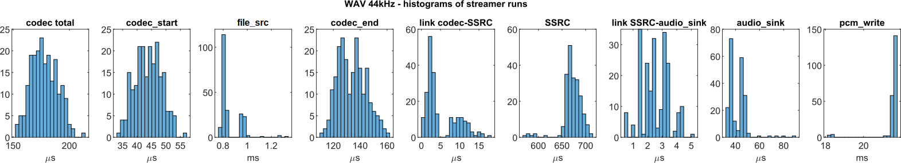
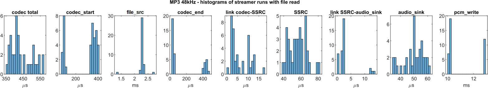
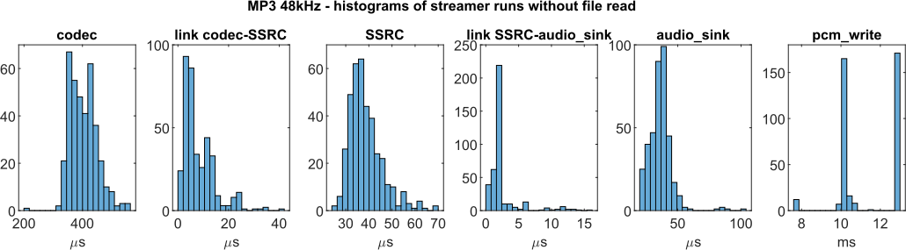
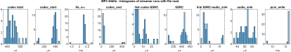
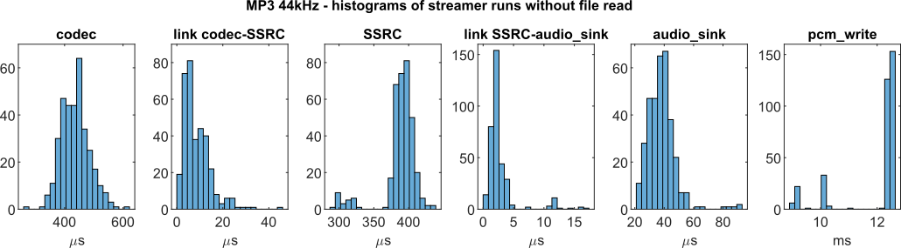
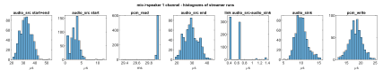
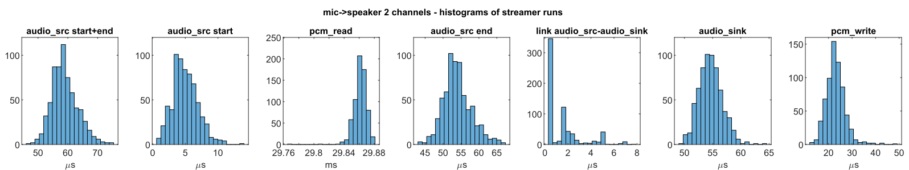

|
Maestro Audio Framework v 1.7
NXP Semiconductors
|
|
Maestro Audio Framework v 1.7
NXP Semiconductors
|
The individual time measurements were conducted using a logic analyzer by monitoring changes in the GPIO port levels on the EVKC-MIMXRT1060 development board. These measurements were executed for each individual pipeline run, capturing the timing at each corresponding element, and, when relevant, the interconnections between these elements.
For the Maestro playback example the following reference audio file was used: test_48khz_16bit_2ch.wav. In this example, the pipeline depicted in the diagram was considered. Media codecs WAV and MP3 were taken into account. To compare the times spent on the SSRC block, sampling rates for both codecs were selected: 44.1 kHz and 48 kHz.
The measurement of streamer pipeline run started at the beginning of streamer_process_pipelines(): streamer.c and ended in the function streamer_pcm_write(): streamer_pcm.c just before the output buffer.
In the scenario involving the WAV codec, the audio file was accessed in every iteration of the streamer pipeline. Meaning, during each run, the file was read directly from the SD card. However, in the case of the MP3 codec, where data processing necessitates complete MP3 frames, the file wasn't read during every run. Rather, it was accessed periodically, triggered when the codec buffer lacked a complete MP3 frame of data. The total time spent on codec processing varies significantly depending on the type and implementation of the codec. For certain types of codecs, like FLAC, there may be multiple file accesses during a single pipeline run. The provided values are specific to the reference implementation. For details about the codecs please see MP3 decoder and WAV decoder documents.
The duration of the streamer pipeline illustrates that with a sampling frequency of 48 kHz, there is no resampling occurring at the SSRC element. Consequently, the overall pipeline time is lower than in the case of 44.1 kHz audio, where resampling takes place.
To enhance comprehension of the system's behavior, histograms of the pipeline run times and its elements are included. The greater time variance with the MP3 codec is precisely due to the absence of file reads in every run. In clusters with shorter times, there are no file accesses, while in clusters with longer times, file reads occur. This indicates that the majority of runs do not involve file access.
| WAV 48 kHz | WAV 44 kHz | MP3 48 kHz file read | MP3 48 kHz w/o file read | MP3 44 kHz file read | MP3 44 kHz w/o file read | |
|---|---|---|---|---|---|---|
| mean | 1.11 ms | 1.76 ms | 2.87 ms | 0.51 ms | 3.22 ms | 0.89 ms |
| min | 1.03 ms | 1.60 ms | 2.74 ms | 0.41 ms | 2.33 ms | 0.74 ms |
| max | 1.29 ms | 2.23 ms | 3.24 ms | 1.83 ms | 3.73 ms | 1.12 ms |
In the tables and histograms below, the timings for individual elements and their connections are provided. Given that the file reading function was invoked during the codec's operation, the tables for individual elements display the total time on the codec element, the time on the codec element before the file read, and the time on the codec element after the file read. The individual blocks in the tables are as follows:
The start times of the time intervals for individual blocks and their respective links were measured by altering the GPIO pin level in the following functions:
streamer_process_pipelines():streamer.cdecoder_sink_pad_process_handler():decoder_pads.cfilesrc_read():file_src_rtos.cSSRC_Proc_Execute():ssrc_proc.caudiosink_sink_pad_chain_handler():audio_sink.cstreamer_pcm_write():streamer_pcm.cpad_push():pad.c
| WAV 48kHz | streamer | codec total | codec start | file_src | codec end | link codec-SSRC | SSRC_proc | link SSRC-audio_sink | audio_sink | pcm_write |
|---|---|---|---|---|---|---|---|---|---|---|
| mean | 1.119 ms | 152 μs | 31 μs | 0.843 ms | 120 μs | 5 μs | 64 μs | 2 μs | 40 μs | 20.228 ms |
| min | 1.026 ms | 125 μs | 21 μs | 0.773 ms | 104 μs | <1 μs | 47 μs | <1 μs | 30 μs | 19.805 ms |
| max | 1.290 ms | 193 μs | 49 μs | 1.311 ms | 144 μs | 23 μs | 93 μs | 14 μs | 91 μs | 20.324 ms |
| WAV 44kHz | streamer | codec total | codec start | file_src | codec end | link codec-SSRC | SSRC_proc | link SSRC-audio_sink | audio_sink | pcm_write |
|---|---|---|---|---|---|---|---|---|---|---|
| mean | 1.765 ms | 178 μs | 44 μs | 0.853 ms | 134 μs | 5 μs | 671 μs | 3 μs | 42 μs | 21.472 ms |
| min | 1.604 ms | 145 μs | 33 μs | 0.770 ms | 112 μs | <1 μs | 574 μs | <1 μs | 33 μs | 18.163 ms |
| max | 2.233 ms | 218 μs | 57 μs | 1.335 ms | 161 μs | 18 μs | 715 μs | 5 μs | 89 μs | 21.746 ms |


| MP3 48 kHz w/ file read | streamer | codec total | codec start | file_src | codec end | link codec-SSRC | SSRC_proc | link SSRC-audio_sink | audio_sink | pcm_write |
|---|---|---|---|---|---|---|---|---|---|---|
| mean | 2.871 ms | 441 μs | 279 μs | 2.271 ms | 162 μs | 6 μs | 56 μs | 3 μs | 50 μs | 11.019 ms |
| min | 2.739 ms | 353 μs | 74 μs | 1.353 ms | 26 μs | <1 μs | 40 μs | <1 μs | 34 μs | 10.091 ms |
| max | 3.244 ms | 570 μs | 409 μs | 2.728 ms | 467 μs | 18 μs | 80 μs | 14 μs | 62 μs | 12.910 ms |
| MP3 48 kHz w/o file read | streamer | codec total | codec start | file_src | codec end | link codec-SSRC | SSRC_proc | link SSRC-audio_sink | audio_sink | pcm_write |
|---|---|---|---|---|---|---|---|---|---|---|
| mean | 0.508 ms | 403 μs | x | x | x | 8 μs | 39 μs | 3 μs | 36 μs | 11.326 ms |
| min | 0.407 ms | 208 μs | x | x | x | <1 μs | 25 μs | <1 μs | 21 μs | 7.715 ms |
| max | 1.834 ms | 563 μs | x | x | x | 41 μs | 69 μs | 16 μs | 104 μs | 12.941 ms |


| MP3 44 kHz w/ file read | streamer | codec total | codec start | file_src | codec end | link codec-SSRC | SSRC_proc | link SSRC-audio_sink | audio_sink | pcm_write |
|---|---|---|---|---|---|---|---|---|---|---|
| mean | 3.217 ms | 436 μs | 367 μs | 2.300 ms | 66 μs | 7 μs | 403 μs | 3 μs | 51 μs | 12.188 ms |
| min | 2.329 ms | 383 μs | 73 μs | 1.411 ms | 26 μs | 2 μs | 318 μs | <1 μs | 35 μs | 9.119 ms |
| max | 3.726 ms | 547 μs | 464 μs | 2.801 ms | 441 μs | 27 μs | 454 μs | 12 μs | 65 μs | 12.529 ms |
| MP3 44 kHz w/o file read | streamer | codec total | codec start | file_src | codec end | link codec-SSRC | SSRC_proc | link SSRC-audio_sink | audio_sink | pcm_write |
|---|---|---|---|---|---|---|---|---|---|---|
| mean | 0.891 ms | 437 μs | x | x | x | 9 μs | 388 μs | 3 μs | 38 μs | 11.934 ms |
| min | 0.738 ms | 268 μs | x | x | x | <1 μs | 290 μs | <1 μs | 22 μs | 8.964 ms |
| max | 1.115 ms | 620 μs | x | x | x | 45 μs | 438 μs | 17 μs | 92 μs | 12.624 ms |


Typical execution times of the streamer pipeline and its individual elements for the EVKC-MIMXRT1060 development board are detailed in the following tables. The duration spent on output buffers and reading from the microphone is excluded from traversal measurements. Three measured pipelines are depicted in the figure below. The first involves a loopback from microphone to speaker, supporting both mono and stereo configurations. The second pipeline is a mono voice control setup, comprising microphone and VIT blocks. The final pipeline is a stereo voice control setup, integrating microphone, voice seeker, and VIT blocks. The measurement of streamer pipeline run started at the beginning of streamer_process_pipelines():streamer.c and ended in the function streamer_pcm_write(): streamer_pcm.c just before the output buffer.
The individual blocks in the tables are as follows:
The start times of the time intervals for individual blocks and their respective links were measured by altering the GPIO pin level in the following functions:
streamer_process_pipelines():streamer.caudiosrc_src_process():audio_src.cstreamer_pcm_read():streamer_pcm.caudio_proc_sink_pad_chain_handler():audio_proc.cvitsink_sink_pad_chain_handler():vit_sink.caudiosink_sink_pad_chain_handler():audio_sink.cstreamer_pcm_write():streamer_pcm.cpad_push():pad.c| microphone -> speaker mono | streamer | audio_src_start | pcm_read | audio_src_end | link audio_src-audio_sink | audio_sink | pcm_write |
|---|---|---|---|---|---|---|---|
| mean | 43 μs | 3 μs | 29.938 ms | 29 μs | <1 μs | 10 μs | 18 μs |
| min | 26 μs | <1 μs | 29.350 ms | 19 μs | <1 μs | 5 μs | 12 μs |
| max | 72 μs | 12 μs | 29.957 ms | 44 μs | 1 μs | 15 μs | 25 μs |
| microphone -> speaker stereo | streamer | audio_src_start | pcm_read | audio_src_end | link audio_src-audio_sink | audio_sink | pcm_write |
|---|---|---|---|---|---|---|---|
| mean | 115 μs | 5 μs | 29.861 ms | 54 μs | 2 μs | 55 μs | 23 μs |
| min | 94 μs | <1 μs | 29.768 ms | 43 μs | <1 μs | 50 μs | 12 μs |
| max | 154 μs | 14 μs | 29.880 ms | 67 μs | 8 μs | 65 μs | 49 μs |


| microphone -> VIT | streamer | audio_src_start | pcm_read | audio_src_end | link audio_src-vit | vit |
|---|---|---|---|---|---|---|
| mean | 7.380 ms | 30 μs | 22.624 ms | 78 μs | 2 μs | 7.261 ms |
| min | 2.641 ms | 10 μs | 2.2265 ms | 58 μs | <1 μs | 2.559 ms |
| max | 7.780 ms | 42 μs | 2.7341 ms | 94 μs | 5 μs | 7.624 ms |
| microphone -> voice seeker -> VIT | streamer | audio_src_start | pcm_read | audio_src_end | link audio_src-voiceseeker | voiceseeker | link voiceseeker-vit | vit |
|---|---|---|---|---|---|---|---|---|
| mean | 9.916 ms | 22 μs | 20.084 ms | 84 μs | 4 μs | 2.386 ms | 13 μs | 7.407 ms |
| min | 4.983 ms | 19 μs | 19.738 ms | 72 μs | <1 μs | 2.228 ms | 2 μs | 2.662 ms |
| max | 10.423 ms | 34 μs | 24.777 ms | 100 μs | 7 μs | 2.522 ms | 31 μs | 7.729 ms |